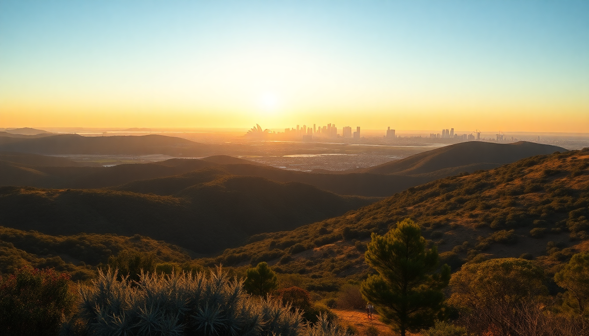

14-Day Australia Itinerary: Sydney, Melbourne, Reef & Uluru

I just got back from two weeks in Australia, and I’ll tell you straight: you can’t see the whole country in 14 days, but you can hit the four heavyweights without losing your mind. This itinerary strings together Sydney, Melbourne, Cairns (for the Great Barrier Reef), and Uluru with real transit times and my honest take on what’s worth your money.
How do you split 14 days across four cities?
You need to be ruthless with time. I landed in Sydney, flew to Cairns, then Uluru, then Melbourne, and flew home from Melbourne. That loop avoids backtracking. Here’s the exact day breakdown I used:
- Sydney: 4 nights (Days 1–4)
- Cairns: 3 nights (Days 5–7)
- Uluru: 2 nights (Days 8–9)
- Melbourne: 4 nights (Days 10–14)
Flights between cities eat half a day each. I booked Jetstar and Virgin Australia for the legs—cheap, but pack snacks and download Netflix. The Cairns-to-Uluru flight is the longest (about 3 hours), so I scheduled it for a morning departure and landed by lunch.
What should you actually do in Sydney?
Sydney is big, sunny, and expensive. I stayed at the Sydney Harbour Marriott Hotel at Circular Quay—walked straight out to the ferry terminal and the Opera House. Skip the BridgeClimb if you hate heights or crowds; the view from Mrs Macquarie’s Chair is free and better for photos.
Key stops I’d repeat:
- Bondi to Coogee coastal walk – 6 km, takes 2 hours, stop at Icebergs for a beer and a dip in the ocean pool.
- The Rocks weekend market – Saturdays, grab a meat pie from Pie Face and browse the handmade stuff.
- Taronga Zoo – Take the ferry from Circular Quay. The ferry ride is half the experience.
- Chinatown – Hit Mr. Wong for the best dim sum I’ve had outside Hong Kong.
One warning: The Sydney Tower Eye is overpriced and feels like a mall observation deck. Save your $30.
Is Cairns the right base for the Great Barrier Reef?
Yes, but don’t stay in Cairns itself for the reef. I booked two nights at Pullman Reef Hotel Casino in Cairns for the nightlife (the Rusty’s Market on Saturday is legit), then one night on Green Island at Green Island Resort. That resort is the only accommodation on the island, and it lets you snorkel before the day-trippers arrive at 10 AM.
Best reef activities:
- Outer reef pontoon tour with Reef Magic – They take you to Moore Reef. Snorkeling gear included, scuba is extra. I paid $25 for a guided snorkel tour—worth it to see the clams and giant trevallies.
- Kuranda Skyrail – A cable car over the rainforest canopy. Get off at Barron Falls for a short walk. The train back is slow; I’d skip it and taxi instead.
- Daintree River cruise – I booked a morning tour with Solar Whisper. Saw a 4-meter croc and a cassowary.
Honest take: The reef is bleaching. It’s still beautiful, but the coral is patchy. If you’re a diver, go to Ningaloo Reef instead. For a first-timer, this is fine.
How do you handle Uluru without a tour group?
Uluru is remote. I flew into Ayers Rock Airport (code AYQ) and stayed at Desert Gardens Hotel inside the Yulara resort area—it’s a 20-minute shuttle from the airport and a 10-minute drive to the rock itself. You cannot stay closer unless you camp.
What worked for me:
- Uluru sunrise viewing at Talinguru Nyakunytjaku – Get there by 5:30 AM. The colors shift from purple to orange in about 20 minutes.
- Base walk – 10.6 km loop around the rock. Flat, easy, takes 3 hours. No water along the way—bring 2 liters.
- Field of Light – Bruce Munro’s art installation. Book the dinner option at Sounds of Silence—you eat bush-tucker canapés under the stars. Overpriced ($200+), but the sunset view of Uluru from the dune is unmatched.
- Kata Tjuta (the Olgas) – The Valley of the Winds walk is harder than the base walk (steep sections), but the red domes are more dramatic than Uluru itself.
Don’t climb Uluru. It’s closed for good as of 2019, and it’s culturally disrespectful anyway.
What’s the best way to experience Melbourne?
Melbourne is the food and coffee capital of Australia. I stayed at The Langham on Southbank—walkable to Flinders Street Station and the NGV (National Gallery of Victoria). Skip the Skydeck (another overpriced tower) and spend your time in the laneways.
My Melbourne hit list:
- Degraves Street for coffee – Proud Mary is my go-to. Flat white, no sugar.
- Queen Victoria Market – Go on a Wednesday night for the Night Market (street food stalls, live music). The Bratwurst from The Bratwurst Shop is messy but delicious.
- Fitzroy neighborhood – Walk Brunswick Street for vintage shops and street art. Lune Croissanterie is a 45-minute wait but worth it for the almond croissant.
- Great Ocean Road day trip – I booked with Go West Tours. Saw the Twelve Apostles (crowded but impressive), Loch Ard Gorge, and Bells Beach. The drive is 9 hours round trip; bring Dramamine if you get car sick.
Pro tip: Melbourne’s tram system is free in the Free Tram Zone (CBD). Don’t bother with a Myki card if you’re only downtown.
When is the best time to visit all four cities?
You can’t hit perfect weather everywhere. I went in late October (spring in the south, dry season in the north). Here’s what each city felt like:
- Sydney: 20–25°C, sunny, light jacket at night. Perfect for walking.
- Cairns: 28°C, humid, one afternoon downpour. Rainforest was lush.
- Uluru: 30°C during the day, 15°C at night. Comfortable for the base walk.
- Melbourne: 18–22°C, windy, one cloudy day. Pack a windbreaker.
Avoid December–February for Cairns (cyclone season) and June–August for Uluru (freezing nights, daytime still hot). March–April is also good, but flights are pricier.
FAQ
Do I need a visa for Australia? Yes, most nationalities need an ETA (Electronic Travel Authority). I applied online through the Australian Department of Home Affairs—took 10 minutes, cost $20 AUD. It’s linked to your passport, so no paper stamp.
How much cash should I carry? Almost everything in Australia takes cards. I used my Wise debit card for ATM withdrawals (no foreign transaction fees). I kept $100 AUD in cash for markets and small stalls. Tipping isn’t expected, but I tipped 10% at sit-down restaurants for good service.
Can I do this itinerary with kids? Possible, but adjust the pace. In Sydney, skip the Bondi walk and do Darling Harbour instead (free playgrounds and the Australian National Maritime Museum). In Cairns, the reef tour is kid-friendly (life jackets, glass-bottom boat). Uluru’s base walk is fine for older kids (8+). Melbourne’s tram system is easy with a stroller.
Conclusion
- Book flights early. Jetstar and Virgin Australia have sales 3–4 months out. I paid $150 AUD for Sydney–Cairns.
- Pack layers. Sydney and Melbourne can swing 10°C in one day. A fleece and a rain shell cover it.
- Skip the tours you can DIY. The Bondi walk and Uluru base walk are free. Save money for the reef and Great Ocean Road.
- Eat local. Meat pies from Harry’s Cafe de Wheels in Sydney, barramundi in Cairns, and a parma (chicken parmigiana) at a pub in Melbourne.
- Respect Indigenous culture. Don’t take photos of sacred sites at Uluru without permission. Read the signs.